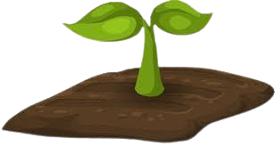

Suitable factors required for the cultivation of Guava are : 1. Temperature, 2. Rainfall, 3. Soils, 4. Fertilizers and 5.Labour !
Temperature: 
Guava trees are well adapted to warm subtropical to tropical climatic conditions. Ideal temperatures for growth and production range from 73° to 82°F (23–28 g). Temperatures below 60°F or drought cause growth to slow or cease.
Rainfall:
Dry moderate winter and summer coupled with an annual rainfall of 1000 mm is ideal for its growth and development.Guava can be successfully grown under tropical and sub-tropical climate up to an altitude of 1000-1500 m msl.
Soils:
The importance of guava is due to the fact that it is a hardy plant, which can be grown on wide varieties of soils including shallow, medium black and alkaline soil. However, it grows successfully on well-drained soils with atleast 0.5 to 1m in depth.
Fertilizers:
Organic manure, phosphorus and potash and half dose of nitrogen should be applied during June-July and the remaining quantity applied in October-November. The optimum leaf nutrient status fixed for guava is 1.7% N, 0.5% 1.3% K,2.1% Ca, 0.46% Mg, 10.0 B, 77.5 ppm Zn and 75.0 ppm Cu.
Labour:
Growing Guava is, in general, not a labour intensive. only 2 labours required for guava cultivation .